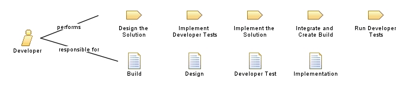

| Role: Developer |
 |
|
 |
||
| Primary Performs | ||
|---|---|---|
| Additionally Performs | ||
| Modifies |
|
|
| Skills | This role needs the following knowledge, skills, and abilities:
In addition, to create a visual model of the system, this role needs the ability to render the design in the Unified Modeling Language (UML). |
|---|---|
| Assignment Approaches | On small, agile teams this role is often shared among several team members that also perform other roles. See Guideline: Self Organize Work Assignments and Guideline: Staffing a Project for more information on this approach. Even in the smallest team, multiple individuals should be working together to create the technical solution. A person performing this role can have specialized skills in a particular technical area, but should also have a broad understanding of all the technologies involved to be able to work with other technical team members. |
This program and the accompanying materials are made available under the |